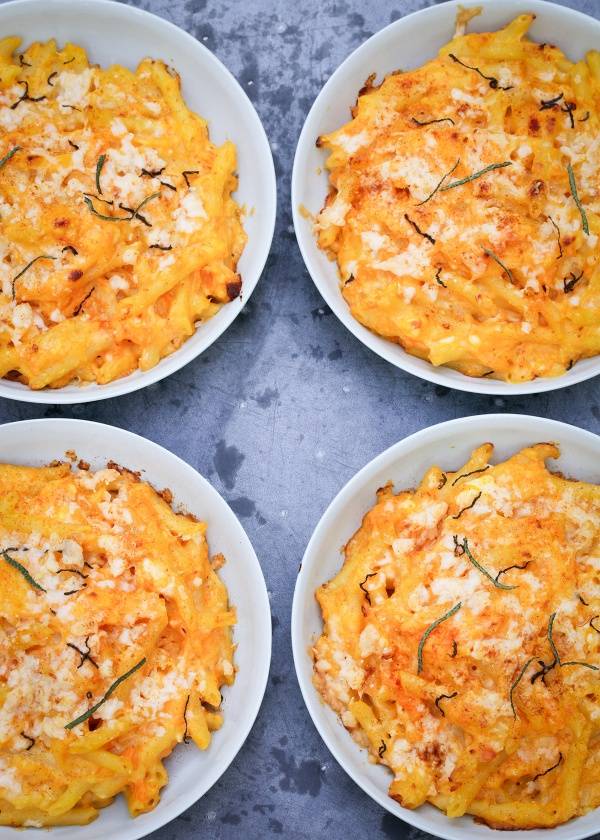

Sweet Potato Macaroni Cheese

Description
This sweet potato Mac and cheese is a variation of the classic Mac and cheese dish where sweet potato puree is added
to the cheese sauce.
The sweet potato adds a hint of sweetness and a creamy texture to the sauce, making it a healthier and more nutritious
version of the classic comfort food.
The dish is typically made by boiling and mashing sweet potatoes and adding them to a cheese sauce made with milk,
butter, and shredded cheese.
The mixture is then combined with cooked pasta and baked until golden brown and bubbly.
It's a delicious and satisfying dish that's perfect for a cozy dinner or a family gathering.
Ingredients
Serves:4
- 500 grams sweet potatoes
- 300 grams pennette (or other small, short pasta)
- 4 tablespoons soft unsalted butter
- 3 tablespoons plain flour
- 500 milliliters full fat milk
- 1 teaspoon English mustard (from a jar)
- ¼ teaspoon paprika (plus another quarter teaspoon to sprinkle on top)
- 75 grams feta cheese
- 125 grams mature cheddar (plus 25g/quarter cup to sprinkle on top)
- 4 fresh sage leaves
- Maldon sea salt flakes (to taste)
- pepper (to taste)
Method
- Preheat the oven to 200°C/180°C Fan/gas mark 6/400°F.
Put on a large-ish pan of water to boil, with the lid on
to make it come to the boil faster.
- Peel the sweet potatoes and cut them roughly into 2–3cm/1inch pieces.
When the water’s boiling, add salt to taste, and then the sweet potato pieces,
and cook them for about 10 minutes or until they are soft. Scoop them out of the
water into a bowl — using a ”spider” or slotted spoon — and lightly mash with a
fork, without turning them into a purée. Don’t get rid of this water, as you will
need it to cook your pasta in later.
- In another saucepan, gently melt the butter and add the
flour, whisking to form a roux, then take the pan off the
heat, slowly whisk in the milk and, when it’s all combined and
smooth, put back on the heat. Exchange your whisk for a wooden spoon, and continue to stir until your gently
bubbling sauce has lost any floury taste and has thickened. Add the mustard and the ¼
teaspoon of paprika. Season to taste, but do remember
that you will be adding Cheddar and salty feta later, so overdo it for now.
- Cook the pennette in the sweet-potato water, starting to check 2 minutes earlier
than packet instructions dictate, as you want to make sure it doesn’t lose its
bite entirely. Drain (reserving some of the pasta cooking water first) and then
add the pennette to the mashed sweet potato, and fold in to combine; the heat
of the pasta will make the mash easier to mix in.
- Add the feta cheese to the sweet potato and pasta mixture, crumbling it in so
that it is easier to disperse evenly, then fold in the white sauce, adding the
125g/1¼ cups grated Cheddar as you go. Add some of the pasta cooking water,
should you feel it needs loosening up at all.
- Check for seasoning again, then, when you’re happy, spoon the brightly sauced
macaroni cheese into 4 small ovenproof dishes of approx. 375–425ml/1½-1¾ cup
capacity (or 1 large rectangular dish measuring approx. 30 x 20 x 5cm/12 x 8 x 2
inches deep and 1.6 litre/6½-cup capacity). Sprinkle the remaining Cheddar over
each one, dust with the remaining ¼ teaspoon of paprika, then shred the sage leaves
and scatter the skinny green ribbons over the top, too.
- Put the pots on a baking tray, pop into the oven and bake for 20 minutes (or,
if you’re making this in a larger dish, bake for 30–35 minutes), by which time they
will be piping hot and bubbling, and begging you to eat them.